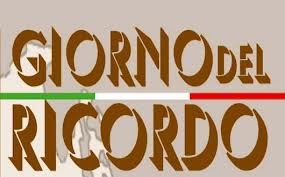
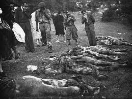
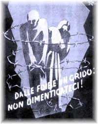
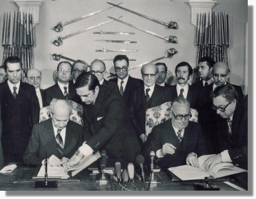
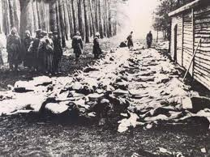
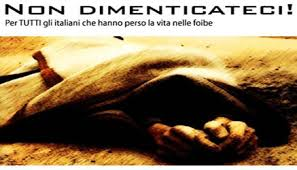

Storia
Il Giorno del ricordo è una solennità civile nazionale italiana, celebrata il 10 febbraio di ogni anno. Istituita con la legge 30 marzo 2004 n. 92 essa commemora le vittime dei massacri delle foibe e dell'esodo giuliano-dalmata. Secondo la legge che l'ha istituito, al Giorno del ricordo è associato il rilascio di una targa commemorativa, destinata ai parenti degli "infoibati" e delle altre vittime delle persecuzioni, dei massacri e delle deportazioni occorse in Istria, in Dalmazia o nelle province dell'attuale confine orientale durante l'ultima fase della seconda guerra mondiale e negli anni immediatamente successivi.
Le Foibe
Con l'espressione massacri delle foibe, o spesso solo foibe, si intendono gli eccidi ai danni della popolazione italiana della Venezia Giulia e della Dalmazia, occorsi durante la seconda guerra mondiale e nell'immediato dopoguerra. Il nome deriva dai grandi inghiottitoi carsici dove furono gettati i corpi delle vittime, che nella Venezia Giulia sono chiamati, appunto, "foibe". Per estensione i termini "foibe" ed il neologismo "infoibare" sono diventati sinonimi di uccisioni che in realtà furono in massima parte perpetrate in modo diverso: la maggioranza delle vittime morì nei campi di prigionia jugoslavi o durante la deportazione verso di essi. Il fenomeno dei massacri delle foibe è da inquadrare storicamente nell'ambito della secolare disputa fra italiani e popoli slavi per il possesso delle terre dell'Adriatico orientale, nelle lotte intestine fra i diversi popoli che vivevano in quell'area e nelle grandi ondate epurative jugoslave del dopoguerra, che colpirono centinaia di migliaia di persone in un paese nel quale, con il crollo della dittatura fascista, andava imponendosi quella di stampo filo-sovietico, con mire sui territori di diversi paesi confinanti.
 Accordo politico
La questione delle foibe e la nascita della nuova Jugoslavia Fu proprio nei giorni precedenti gli accordi del 12 giugno tra il governo jugoslavo e gli alleati che stabilirono per la cosiddetta "zona A'' (Trieste Gorizia e Pola) l'amministrazione "alleata'' e il controllo della "zona B'' (la parte restante della regione, l'Istria e Fiume) alla Jugoslavia, che si acutizzò lo scontro delle forze ostili al nuovo governo rivoluzionario nel tentativo di mettere in discussione la nascita della nuova Jugoslavia proprio mentre si insediavano e cominciavano a operare le nuove istituzioni del paese. E fu questo il momento in cui i fascisti, i nazisti, i collaborazionisti di ogni sorta e i controrivoluzionari jugoslavi, dovettero assumersi la piena responsabilità della loro politica e delle loro azioni. In questa azione di giustizia tanto necessaria quanto difficile, saranno sicuramente stati emessi verdetti errati per alcune persone così come si saranno verificati casi di vendette personali; ma questo non può assolutamente costituire un fattore di alterazione e di falsificazione di quegli avvenimenti. Vi è una connessione stretta e ineludibile, un filo conduttore che lega particolari e contingenti avvenimenti quali le foibe, la detenzione dei prigionieri di guerra, il cosiddetto esodo degli italiani d'Istria, alla politica fascista della snazionalizzazione, all'aggressione nazifascista della Jugoslavia, all'occupazione militare italiana, all'attività nazista nel "Litorale Adriatico'', alla persecuzione antifascista e antiebraica. è necessario quindi ribadire con forza verità e responsabilità sugli avvenimenti di quegli anni, fuori dall'ottica delle falsità prodotte dalla propaganda fascista sia sul piano quantitativo (il numero dei morti ritrovati nelle foibe) che su quello storico, e dentro, invece, allo sviluppo organico della politica nazifascista. Sul piano dei rapporti fra Stati, l'Italia ha disatteso alla salvaguardia dei diritti della minoranza slava e l'Italia ha fatto carta straccia del Trattato di Rapallo attaccando la Jugoslavia nel 1941 e annettendosi i territori della "provincia di Lubjana''. Sul piano della responsabilità politica, la snazionalizzazione delle popolazioni slave, l'invasione e lo smembramento di un intero Stato, l'oppressione sanguinaria delle popolazioni civili sono alla base della rivolta e della richiesta di giustizia delle masse popolari italiane, slovene e croate. Sul piano della verità, le foibe non rappresentano affatto il simbolo del genocidio della popolazione italiana e dell'odio antiitaliano. Non ci fu nessuno sterminio etnico contro gli italiani, ma una comune rivolta contro gli aguzzini fascisti, nazisti, ustascia e collaborazionisti macchiatisi di ogni sorta di crimini. Una lotta di Liberazione contro la barbarie nazifascista e per la riappropriazione della libertà e dell'indipendenza nazionale. E l'esempio principale è dato proprio dalla lotta unitaria dei diversi popoli, dalla lotta unitaria delle diverse organizzazioni e formazioni partigiane, dall'aiuto generoso dato dalle popolazioni slave a migliaia di soldati italiani in rotta dopo l'8 settembre 1943 e braccati dai loro ex alleati tedeschi. Soldati che erano invasori ma che devono la loro salvezza e la loro libertà al popolo jugoslavo e a quanti mettendo a repentaglio la loro stessa vita, li hanno sottratti alla vendetta nazista. è nostro dovere impedire a chiunque di gettare fango sulla lotta di Liberazione e sui partigiani. Gli ideali e i valori della Resistenza e dell'antifascismo sono e devono rimanere un patrimonio indelebile della nostra storia, del nostro popolo e dell'intera umanità.
Genocidio
La figura di Vasa Cubrilovic e dei suoi due manuali di puliza etnica dimostra in modo inconfutabile l’erroneità delle tesi di chi, ancora oggi, nega, minimizza o giustifica il genocidio italiano in Venezia Giulia e Dalmazia, compiuto dai comunisti di Tito. Infatti, i piani operativi stesi dal Cubrilovic, altissimo personaggio del regime socialista jugoslavo ed amico personale di Tito, provano ulteriormente come la Jugoslavia avesse programmato con largo anticipo un’operazione di “ingegneria etnica” in Venezia Giulia, oltre che in altre regioni allogene su cui aveva delle mire. Nel 1936, quindi anteriormente alla guerra mondiale ed alla salita al potere di Tito, il Cubrilovic aveva redatto un testo chiamato Iscljavanje Arnauta, cioè Piano di allontanamento degli albanesi, nel quale suggeriva una serie di misure per estirpate gli odiati “Arnauti”, appunto gli Albanesi, dal Kosovo. (sui fortissimi contrasti interni alla Jugoslavia monarchica cfr. ad esempio Jacob Hoptner, “Yugoslavia in Crisis, 1934-1941”, New York 1962, nel quale si documenta la realtà di un sistema statale essenzialemente serbocentrico dilaniato dagli opposti nazionalismi delle varie etnie facente parte della Jugoslavia. Sull’argomento dei nazionalismi jugoslavi è notevole, fra gli altri, lo studio di K. Boeckh, “Von den Balkankrieg zum Ersten Weltkrieg. Kleinstaatenpolitik und ethnische Selbsbestimmung auf dem Balkan”, München 1996). E’ degno di nota come, di fatto, il manuale Cubrilovic, opportunamente modificato a seconda delle esigenze del tempo, abbia poi trovato effettiva applicazione in terra kosovara ad opera di Milosevic nell’ultimo conflitto balcanico. Il Cubrilovic indicava una serie di misure precise per scacciare gli “etnodiversi”: 1) leggi discriminatorie a loro danno, tali da indurli ad andarsene 2) Misure strettamente economiche: tassazioni, espropri, prestazioni lavorative forzose, ritiro delle licenze commerciali, licenziamenti di massa dei membri delle etnia “ostile” 3) Misure di ordine religioso: arresto o cacciata del clero, distruzione di edifici di culto e cimiteri, impedimenti frapposti al libero esercizio del culto ecc. 4) la costituzione di reparti para-militari di civili armati, tratti dall’etnia dominante ed inviati nella regione al fine di terrorizzare e vessare gli abitanti locali 5) il compimento di stragi, arresti e deportazioni di massa, al fine di creare una “psicosi dell’evacuazione” (questa è l’espressione adoperata dal Cubrilovic) ed indurre gli “etnodiversi” ad andarsene. 6) l’intera operazione doveva essere ben pianificata ed organizzata dall’alto, da parte del governo e dello stato maggiore, e con l’ausilio non solo dell’esercito e della polizia, ma persino di altri organismi, come, ad esempio, i sindacati. Cubrilovic poi nel 1944 scrisse un suo secondo memorandum, che s’intitola “Il problema delle minoranze nella nuova Jugoslavia” [Manjinski problem u novoj Jugoslaviji]. Esso riprendeva la sostanza del piano del primo, mentre la differenza principale è che non era più rivolto verso gli Albanesi, bensì in direzione di tutte le minoranze non jugo-slave che sarebbero state incluse nei territori della nuova repubblica socialista.
 